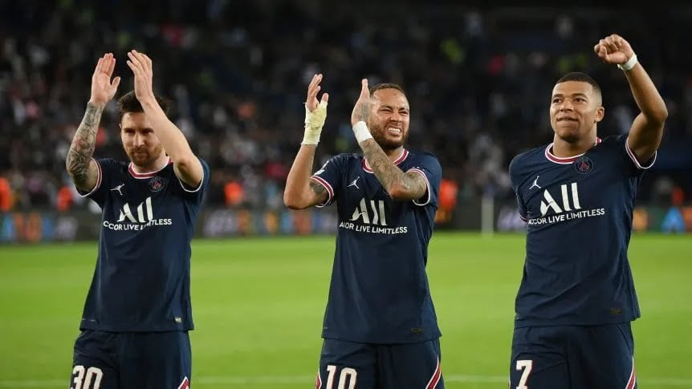

FAL Futbol de primera
Lo mas referente en el futbol Europeo
Leonardo reveló lo que le faltó a Messi, Neymar y Mbappé para brillar en PSG
El brasileño Leonardo, exdirector deportivo del París Saint-Germain (PSG), afirmó que a Lionel Messi, Neymar y Kylian Mbappé les faltó apoyo y reconocimiento desde dentro del club francés para alcanzar un "estado de espíritu" triunfador.

En una entrevista el portal "Ge" divulgada este martes, el exfutbolista y extécnico descartó que uno de los factores que hizo naufragar el famoso tridente ofensivo en la Champios League fueran los problemas de "ego" entre ellos.
"Estos tipos que tienen ese nivel de talento no son complicados. Resuelven más problemas de los que crean y, si hay que resolver sus problemas, se hace. Hay que asumir los pros y los contra", analizó.
Sin embargo, consideró que no congeniaron dentro del campo como se esperaba porque desde dentro del club no hicieron lo suficiente para que se sintieran "bien" y "reconocidos".
Sergio Ramos volverá al Sevilla tras alcanzar acuerdo
El histórico defensa español regresará 18 años después al club que lo formó antes de brillar en Europa con Real Madrid y PSG.